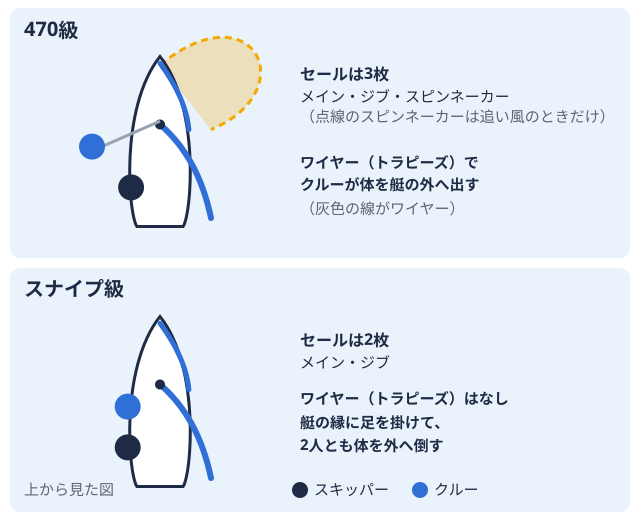

怪我・体調 2026-11-20
ヨット部の冬の低体温症対策｜水温の目安と防寒・落水時の考え方
気温が下がる11月以降も、ヨット部は水の上に出る場面があります。秋のレースが終わっても、冬の練習や春に向けた艇の整備など、寒い時期の活動は続きます。そこで問題になるのが、寒さによる体調不良と、万一落水したときの低体温症です。この記事では、海上保安庁が公開している水温と生存時間の資料、ダイビング向けの防寒の解説、ヨットマニアの既存記事をもとに、冬の海での防寒と安全の考え方を整理します。なお、ここで扱う数値や手順は一般的な目安です。症状の判断や治療は医療の領域であり、実際の装備や出艇可否は、顧問・コーチ・部の安全規程に従ってください。
結論：冬は「落水しない工夫」と「落水してもすぐ上がれる体制」を両方そろえる
先に結論をまとめると、冬のヨット部で押さえたい点は次の4つです。
- 水温の目安を知り、「水に浸かる時間が長くなると危険が増える」ことを部全体で共有する
- 装備は水温・風・練習内容で選び、保温はウェア単体ではなく「インナー・頭・手足」まで含めて考える
- 陸上での待機や艤装艇にマストや帆、舵などを取り付け、すぐに走れる状態に整えること。
 の時間にも冷えが蓄積するため、着替えと温まる場所を用意する
の時間にも冷えが蓄積するため、着替えと温まる場所を用意する - 沈や落水が起きたときの動き方（艇につかまる、動き回らない、早く引き上げる）を、練習で確認しておく
冬は海水温度も低くなるため、海に転落した場合、浮かんでいることができても急激に体温を奪われて体の自由がきかなくなり、意識も薄れていくと、海上保安庁の資料は注意を呼びかけています（第二管区海上保安本部「マリレ情報よろず屋」第5号）。
水温ごとの生存時間の目安を知っておく
海上保安庁が示している数値
第二管区海上保安本部の資料には、IMO（国際海事機関）の船舶捜索救助便覧にもとづく、特別な服を着ない場合の生存可能時間が掲載されています。
| 海水温度 | 生存可能時間（特別な服を着ない場合） |
|---|---|
| 2℃未満 | 45分以内 |
| 2〜10℃ | 1.5〜3時間以内 |
| 10〜20℃ | 6〜12時間以内 |
また、第九管区海上保安本部の「海の安全情報」2023年11月号には、米国沿岸警備隊（U.S. Coast Guard）の資料として、次の目安が載っています（海の安全情報 2023年11月号）。
| 海水温度 | 意識不明に至る時間 | 予想生存時間 |
|---|---|---|
| 5〜10℃ | 30分〜1時間 | 1〜3時間 |
| 10〜15℃ | 1〜2時間 | 1〜6時間 |
| 15〜20℃ | 2〜7時間 | 2〜40時間 |
数値の読み方
2つの表は区分も数値も一致していません。出典や想定条件が異なるため、「この水温なら何時間は安全」という保証としてではなく、幅を持った目安として読むのが適切です。また、これらは海水に浸かっている場合の数値で、体格、年齢、着ている服、波や風の状況、本人の体調によって大きく変わります。
同じ資料に付されている月ごとの平均水温は、その管区の海域のものです。ご自分の水域全国の大学ヨット部を地域ごとに分けた区分。北海道から九州まで全国に9つある。の水温は、気象庁が公開している日本近海の海面水温（気象庁 日本近海の海面水温（月概況））や、練習する港・マリーナの実測値で確認してください。内湾や港の中は、外洋の平均とは違う水温になる場合があります。
読み取れるのは、「冬の海では、水に浸かった状態が数十分から1時間以上続くことが、命に関わる事態につながりうる」ということです。だからこそ、落水を減らす工夫と、落水後に素早く引き上げられる体制が重要になります。
低体温症とは何か
海上保安庁の資料では、低体温症は体温が35度以下になる状態とされています。次第に動作が鈍く緩慢になり、中度では意識が混濁して、正しい応答が得られなくなります。その後は意識がなくなり、重度の非常に危険な状態になる、と説明されています。
艇上で気をつけたいのは、本人が不調を言い出しにくい点です。次のような様子が見られたら、無理をさせずに上がることを優先します。ここに挙げるのは観察のきっかけであり、診断ではありません。
- 震えが止まらない、または逆に震えがなくなってぼんやりしている
- 返事が遅い、言葉がもつれる
- 手先が動かず、シート帆を引いたり緩めたりして、帆の開き具合を調整するためのロープ全般。やロープをうまく扱えない
- 動作が急にぎこちなくなる
2人乗りの艇では、スキッパー2人乗りの艇で、後ろ側に座って舵と大きな帆を操作し、進む方向を決める人。 とクルー2人乗りの艇で、前側に座って小さな帆などを操作し、体重を使って艇の傾きを抑える人。がお互いの顔色や反応を見るようにしておくと、変化に気づきやすくなります。熱中症の場面と同様に、「先に上がります」と言うことが評価に響かない雰囲気づくりが、部として大切です。熱中症側の対策はヨット部の熱中症対策にまとめています。
とクルー2人乗りの艇で、前側に座って小さな帆などを操作し、体重を使って艇の傾きを抑える人。がお互いの顔色や反応を見るようにしておくと、変化に気づきやすくなります。熱中症の場面と同様に、「先に上がります」と言うことが評価に響かない雰囲気づくりが、部として大切です。熱中症側の対策はヨット部の熱中症対策にまとめています。
ウェットスーツとドライスーツの考え方
仕組みの違い
ダイビング向けの解説では、ウェットスーツは体とスーツの間に入った水を体温で温める仕組みで、ドライスーツは水の侵入を防ぎ、保温性は中に着るインナーで調整する、と説明されています（PADI ウェットスーツとドライスーツの違い）。同じ解説では、水温が20℃前後を下回る環境ではドライスーツの使用を検討する、という目安が紹介されています。
ただし、これはダイビングという別の競技の目安です。ヨットは水に浸かっている時間より水面上にいる時間が長く、風を受けて体感温度が下がり、ハイクアウト艇が傾きすぎないよう、体を艇の外側へ乗り出して重しにすること。 
選ぶときの視点
- 水温と風：水温だけでなく、風による体感温度の低下も考えます。気温が低く風の強い日は、水に浸からなくても冷えやすくなります
- 動きやすさ：ハイクアウトやタッキング風が吹いてくる方向へ進むとき、艇の先を風に向けて回し、帆を張る側を左右反対にする方向転換。
 で肩・腰・脚が動かしやすいか。窮屈な装備は動作が小さくなり、かえって冷えや疲れの原因になる場合があります
で肩・腰・脚が動かしやすいか。窮屈な装備は動作が小さくなり、かえって冷えや疲れの原因になる場合があります - ライフジャケットとの併用：ライフジャケットの上から着られるか、重ね着したときに浮力や動きを妨げないかを確認します。ライフジャケットの考え方は泳げなくても大丈夫？ ヨット部の安全とライフジャケットも参照してください
- 着脱のしやすさ：トイレや着替えのたびに手間取る装備は、我慢して体を冷やす原因になります
- 費用と共有：ドライスーツやインナーは安い買い物ではありません。部の備品として共有するか、中古・レンタルを使うかは、部の予算と相談になります。道具の費用の考え方はヨット部の艇の購入・中古・レンタル費用なども参考になります
保温はスーツだけで決まらない
ダイビング向けの解説では、ドライスーツでも寒く感じる原因として、汗冷えやインナーの厚み不足が挙げられています。また、頭部から熱が失われやすいため、フードの着用が保温に役立つとされています。ヨットでも、ニット帽や手袋、ネックウォーマーなど、手足と頭を温める小物の有無が体感を左右する場合があります。ただし、水に濡れる状況では素材によって保温力が落ちることもあるため、実際に使うものは先輩やコーチの助言を受けて選んでください。
陸上での冷え対策も忘れない
冬の冷えは、出艇している時間だけでなく、陸上でも蓄積します。
- 艤装・片付けの時間：風が冷たい中での作業が続くと、出艇前から体が冷えている場合があります。艤装は手早く終え、必要以上に濡れたまま待機しないようにします
- 待機時間：レースや練習で、出艇前後の待機が長い日は、上着や毛布で冷やさないようにします
- 着替え：濡れたウェアのままでいると、帰着後も体温を奪われます。帰着したらすぐに着替えられる場所と、乾いた着替えを用意します
- 温かい飲み物と食事：体を内側から温める飲み物や、糖分・塩分を含む食事を用意しておくと、回復の助けになる場合があります。食事全般はヨット部の食事・栄養管理の記事で扱っています
- 体を動かす習慣：冬のオフシーズンは、陸上でのトレーニングで体を温め、基礎体力を維持することも安全につながります。ヨット部の冬季トレーニング・陸トレも参考になります
沈・落水したときの動き方
動き回らず、体力と体温を守る
海上保安庁の資料は、海中では泳ぎ回らずじっとしていることが、体力の消耗や体温の低下の防止に有効だと説明しています。体温の低下を少しでも防ぐため、できる限り熱放出低減姿勢（HELP：Heat Escape Lessening Posture）をとって救助を待つよう案内されています。ライフジャケットを着けていることが、この姿勢で浮いて待つための前提になります。
ヨットの場合は、転覆したあと艇につかまることができる状況が多いと考えられますが、艇の状態や波・風、艇種によって異なります。艇から離れず、艇にしがみつくのか、起こすのか、伴走艇を待つのかは、部の練習ルールとコーチの指示に従ってください。沈の基本の考え方はヨットが転覆（沈）したときの起こし方で整理しています。
実例から分かること
海上保安庁の資料には、水温約16度の海に落ちた人が、ライフジャケットを着用していても救助まで1時間以上かかり、低体温症などで入院した事例が紹介されています。ライフジャケットがあっても、水に浸かる時間が長くなれば体への負担は大きくなるという点は、ヨット部にとっても参考になります。この事例は釣り中の事故で、ヨットの事故ではありません。
部として整えておきたい仕組み
個人の我慢や根性に頼らず、仕組みにすることが冬の安全につながります。
- 出艇判断の基準：水温・気温・風の条件ごとに、出艇する・短縮する・中止する、を事前に決め、顧問・コーチが最終判断する
- 伴走艇の運用：冬の練習では、伴走艇が常に近くで見守れる配置にし、無線や携帯電話などの連絡手段を確認する
- 単独行動を避ける：誰もいない水域で単独で出艇しない。複数艇で動くことを基本にする
- 温まれる場所：艇庫や部室に、着替えと体を温められる場所、温かい飲み物を用意しておく
- 体調申告の習慣：寒い、手が動かない、頭が痛い、などを遠慮なく言える雰囲気をつくる
- 救急連絡先の共有：最寄りの医療機関、救急要請時の艇庫の場所や海上での位置の伝え方を全員が言えるようにする。海での事故は海上保安庁の緊急通報用電話番号118番が案内されています
- 保険の確認：万一の救急搬送や通院に備え、加入している保険の補償範囲を把握しておく。ヨット部の保険加入の記事も参照してください
冬に出る大会・活動の水域を確認する
大学ヨットの公式大会は秋で一段落しますが、冬から春にかけての活動は水域や大学によって異なります。大会がある場合の開催時期や会場は、ヨットマニアの水域一覧と大会カレンダーから公式の案内ページへたどれます。年間の流れは大学ヨットの年間スケジュール2026でも整理しています。
各大学の拠点は、たとえば慶應義塾大学や東京海洋大学の大学ページで確認できます。大学ディレクトリが対応しているのは関東と近畿北陸の加盟大学だけで、それ以外の水域は大会成績PDFへのリンクのみの掲載です。冬の水温は水域や港によって異なるため、遠征や合宿に出る場合は、開催地の最新の水温・気象情報を事前に確認してください。
まとめ
冬のヨット部の低体温症対策は、(1)海上保安庁などが示す水温ごとの生存時間の目安を知り、水に浸かる時間を長くしない、(2)水温・風・動きやすさを踏まえて装備を選び、頭や手足まで含めて保温する、(3)陸上での冷え対策と、沈・落水時の動き方、伴走艇との連携を部で決めておく、の3つが柱です。数値はあくまで目安で、体格や条件によって変わります。ドライスーツの水温の目安はダイビング向けのもので、ヨットにそのまま当てはまるとは限りません。寒さが強いと感じたら、我慢せずに上がる判断をし、体調に不安がある場合は顧問・コーチや医療機関に相談してください。
出典
PR
この部活・競技を応援したい方へ
体育会学生を支援するプラットフォーム「ツナカレ」で、応援できる部活を探せます。
PR
取材してほしい部活を募集中
あなたの部活・大会を取材してほしい方はこちらからご依頼ください。
部活を続けながら、就活も進めたい方へ
体育会の学生のための就活相談です。無料で、メールアドレス・学年・所属の入力だけで始められます。